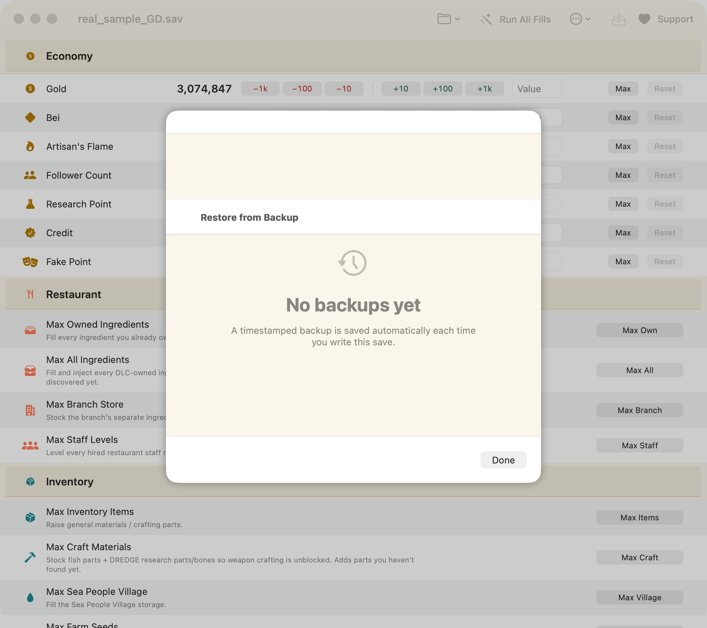
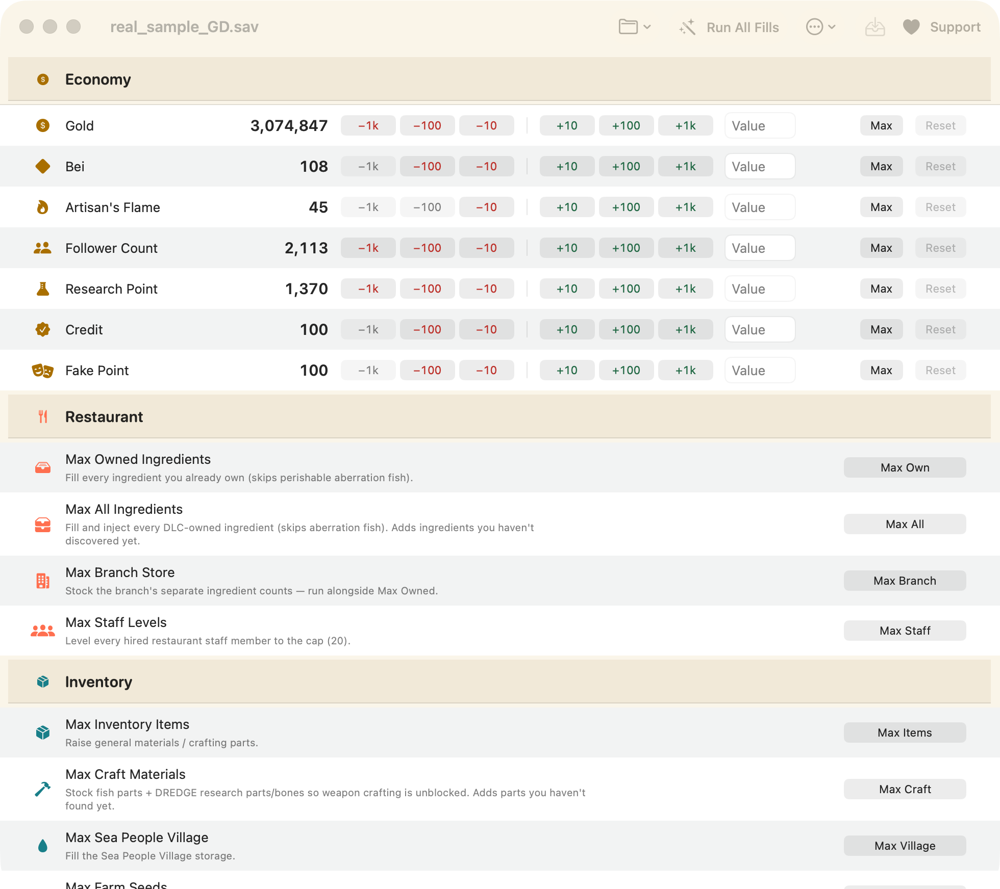
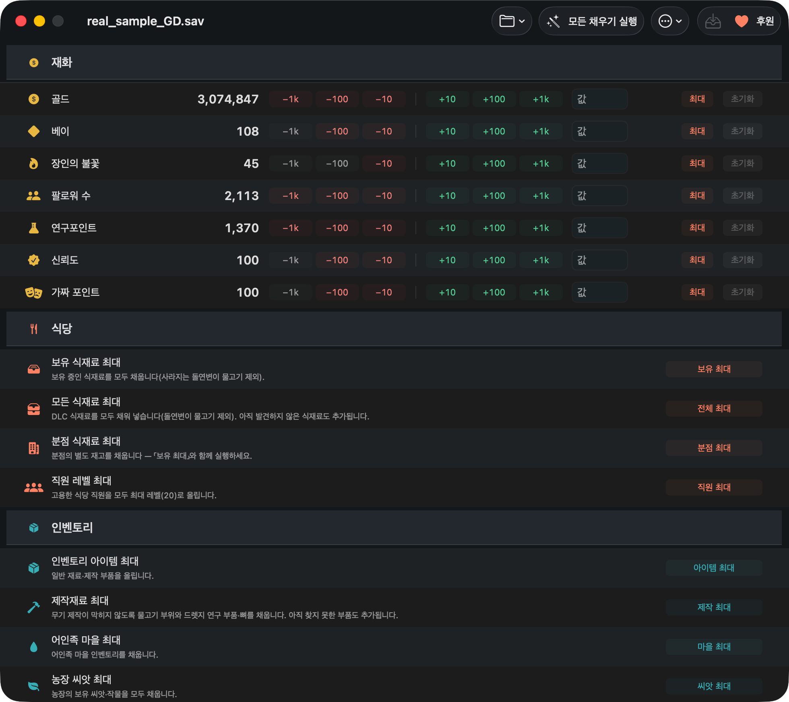

데이브 더 다이버 세이브 파일 위치 (macOS) — 경로와 편집 방법
Mac에서는 설치 환경에 따라 두 가지 경로가 쓰입니다. 두 경로가 각각 어디인지, 그 폴더가 숨어 있는데 어떻게 열어야 하는지, 파일 이름은 무엇인지, 어떻게 백업하는지, 그리고 애써 바꾼 내용을 소리 없이 날려 버리는 Steam 설정 하나까지 정리했습니다.
짧은 답
macOS에서 《데이브 더 다이버》는 세이브를 다음 두 폴더 중 하나에 저장합니다:
~/Library/Application Support/com.nexon.dave/SteamSData/<steam-id>/~/Library/Application Support/nexon/DAVE THE DIVER/SteamSData/
폴더 안의 세이브 파일 이름은 GameSave_XX_GD.sav 형식이며, XX는 슬롯
번호입니다. ~/Library는 기본적으로 숨겨져 있으니
Finder ▸ 이동 ▸ 폴더로 이동…(⇧⌘G)에서 경로를
붙여 넣고 Return을 누르세요.
macOS 세이브 경로 두 곳
정답이 하나로 정해져 있지 않아서 많이들 헤맵니다. Steam macOS 빌드도 설치 환경에 따라 서로 다른 곳에 기록합니다. 두 경로를 모두 확인하세요.
경로 1 — 번들 식별자 폴더 (가장 흔함)
~/Library/Application Support/com.nexon.dave/SteamSData/<steam-id>/
<steam-id>는 여러분의 숫자로 된 Steam 계정 ID입니다. 예를 들어
76561198000000000처럼 긴 숫자입니다. 같은 Mac에서 Steam 계정을 여러 개 썼다면 이런
폴더가 계정 수만큼 보입니다. 그중 수정 날짜가 가장 최근인 폴더가 지금 쓰는 계정입니다.
경로 2 — 제작사/제품 폴더
~/Library/Application Support/nexon/DAVE THE DIVER/SteamSData/
띄어쓰기와 대소문자에 주의하세요. 폴더 이름이 실제로 대문자 DAVE THE DIVER입니다. 이
구조에는 계정별 하위 폴더가 없고, .sav 파일이 SteamSData 안에 바로
들어 있습니다.
맨 앞의 ~에 대해: 이건 홈 폴더를 뜻하는 줄임 표기라서, 전체 경로는 사실
/Users/사용자이름/Library/Application Support/…입니다. 홈 폴더 안에 있는
사용자 Library이지, 디스크 최상위의 /Library가 아닙니다.
그쪽은 완전히 다른 폴더이고 게임 세이브가 들어 있지 않습니다.
숨겨진 ~/Library 폴더 여는 방법
Apple은 ~/Library를 Finder에서 기본적으로 숨겨 둡니다. 경로만 적어 둔 안내글을 보고
막히는 이유가 이것입니다. 들어가는 방법 네 가지를, 쉬운 것부터:
-
폴더로 이동 (가장 빠름). Finder에서 메뉴 막대의 이동 ▸ 폴더로 이동…을 고르거나 ⇧⌘G를 누르세요. 위 경로 중 하나를 붙여 넣고 Return을 누릅니다. 입력하는 동안 Finder가 자동 완성해 주기 때문에, 그 폴더가 실제로 있는지 확인하는 용도로도 쓸 수 있습니다.
-
이동 메뉴에서 Option 키 누르기. 메뉴 막대의 이동을 클릭한 뒤 ⌥(Option)를 누르고 있으면 목록에 라이브러리가 나타납니다.
-
아예 숨김 해제하기. Finder에서 홈 폴더를 열고 (⇧⌘H), ⌘J로 보기 옵션을 연 다음 라이브러리 폴더 보기에 체크하세요. 이후로는 계속 보입니다.
-
터미널에서. 클릭하기 번거롭다면:
open ~/Library/Application\ Support/com.nexon.dave/SteamSData/ open ~/Library/Application\ Support/nexon/DAVE\ THE\ DIVER/SteamSData/백슬래시는 공백을 이스케이프하는 표시입니다. 존재하는 경로는 Finder에서 열리고, 없는 쪽은 “No such file or directory”라고 알려 줍니다. 이 자체가 유용한 답입니다.
팁: 폴더에 도착했으면 SteamSData 폴더를 Finder 사이드바로 끌어다 놓으세요. 다시 올 일이
생깁니다.
GameSave_XX_GD.sav의 의미
SteamSData 안에는 GameSave_00_GD.sav,
GameSave_01_GD.sav 같은 이름의 파일이 있습니다. 두 자리 숫자가 세이브 슬롯 번호입니다.
한 번만 플레이했다면 파일 하나만 보일 가능성이 큽니다. 게임이 함께 관리하는 부수적인 파일들이 옆에
같이 있을 수 있습니다.
| 보이는 것 | 정체 |
|---|---|
GameSave_00_GD.sav | 세이브 슬롯 0 — 실제 게임 데이터. |
GameSave_01_GD.sav | 세이브 슬롯 1, 이후 슬롯도 같은 방식. |
숫자로만 된 폴더, 예: 76561198… | 경로 1 구조에서의 Steam 계정 ID. |
.sav 파일은 일반 텍스트가 아니라서 사람이 읽을 수 없습니다. 텍스트 편집기로 열면
알아볼 수 없는 이진 데이터가 나오고, 텍스트 편집기에서 저장하면 파일이 망가집니다. 의미 있게
편집하려면 먼저 디코딩해야 하는데, 세이브 에디터가 하는 일이 바로 그것입니다.
세이브를 직접 백업하는 방법
쓰는 도구가 알아서 백업을 만들더라도, 무언가 바꾸기 전에 직접 한 번 해 두세요. 10초면 됩니다.
《데이브 더 다이버》를 완전히 종료하세요. 창만 닫지 말고 앱을 종료해서, 저장하는 도중이 아니게 만드세요.
세이브 폴더를 여세요. 위 방법 중 아무거나 쓰면 됩니다.
.sav파일을 선택하고 ⌘D로 복제하거나, ⌘C로 복사한 뒤 폴더 바깥 — 데스크탑, 서류 폴더 안, 외장 드라이브 등 — 에 붙여 넣으세요.-
또는 터미널에서 폴더 전체를 날짜와 함께 통째로 복사할 수도 있습니다:
cp -R ~/Library/Application\ Support/com.nexon.dave/SteamSData \ ~/Desktop/DaveTheDiver-save-backup-$(date +%Y%m%d)
나중에 되돌리려면 게임을 종료한 뒤, 백업해 둔 .sav 파일을
SteamSData 안의 파일 위에 같은 파일 이름 그대로 복사해 덮어쓰면
됩니다.

⚠️ Steam Cloud가 편집 내용을 소리 없이 되돌립니다
"편집이 적용되지 않는다"는 문제의 가장 흔한 원인이고, 에디터와는 아무 상관이 없습니다. Steam을 실행하면 로컬 세이브가 클라우드 사본과 다르다는 것을 감지하고, 게임이 켜지기도 전에 예전 클라우드 버전으로 편집 내용을 덮어씁니다. 편집은 제대로 기록됐고, Steam이 그것을 다시 바꿔치기한 것뿐입니다.
아래 순서를 지키세요:
《데이브 더 다이버》를 완전히 종료하세요. 제대로 만든 에디터라면 게임이 실행 중일 때 저장을 거부합니다. 저장 도중에 파일을 건드리는 것이 파일이 망가지는 대표적인 경로입니다.
이 게임의 Steam Cloud를 끄세요. Steam 라이브러리 → 데이브 더 다이버 우클릭 → 속성 → 일반 → Steam 클라우드에 게임 저장 보관(Keep game saves in the Steam Cloud) 체크 해제.
편집하고 저장하세요. 시각이 기록된 백업이 자동으로 먼저 만들어집니다.
게임을 실행하세요. 이제 편집한 세이브가 그대로 불러와집니다.
Mac에서 실제로 세이브를 편집하는 방법
파일을 찾는 건 쉬운 쪽 절반입니다. .sav는 인코딩돼 있어서 텍스트 편집기로는 손댈 수
없고, 많이 쓰이는 Windows용 에디터들은 macOS에서 돌리려면 Wine이나 CrossOver, 가상 머신이
필요합니다.
DiveSaveEd는 바로 이 상황을 위해 만든 무료 오픈소스 네이티브 Mac 앱입니다. 두 세이브 경로를 알아서 찾고, 모든 슬롯을 목록에 보여주며, 재화(골드, 베이, 장인의 불꽃, 연구포인트, 쿡스타 팔로워 수, 신뢰도, 가짜 포인트)를 편집하거나, 식당 식재료와 인벤토리를 일괄로 채우거나, 아이템 하나를 이름으로 찾아 바꿀 수 있습니다. 일괄 작업은 모두 앱 안에서 되돌릴 수 있고, 저장할 때마다 백업이 먼저 만들어지며, 그냥 들여다보고 싶을 때를 위한 읽기 전용 원본 JSON 뷰어도 있습니다.


macOS 14 이상, Apple Silicon과 Intel 지원. Apple의 서명과 공증을 받았습니다. MIT 라이선스.
Nintendo Switch와 PlayStation 세이브
Switch와 PlayStation 세이브는 이 방식으로 편집할 수 없습니다. 콘솔 세이브는 콘솔
자체의 암호화된 저장 공간에 들어 있어서 ~/Library/Application Support에는 아예
나타나지 않고, 파일 형식도 다릅니다. Switch 세이브를 Mac으로 꺼내오려면 콘솔에 커스텀 펌웨어나
홈브류가 필요한데, 그건 위험도 다른 별개의 문제이며 이 페이지의 내용은 거기에 적용되지 않습니다.
위 경로들은 macOS Steam 버전 전용입니다.
Xbox / Microsoft Store 버전도 범위 밖입니다. 애초에 Mac으로 나오지 않았고, 세이브를 Windows 쪽의 다른 형식으로 저장합니다.
폴더를 찾지 못할 때
- 다른 Library를 봤을 수 있습니다. 반드시 홈 폴더 안의
~/Library여야 합니다. 디스크 최상위의/Library가 아닙니다. - 게임을 한 번도 실행하지 않았습니다. 이 폴더는 게임을 처음 실행할 때 만들어집니다. 게임을 한 번 켜서 세이브가 생길 때까지 진행한 뒤 종료하고 다시 확인하세요.
- Finder에서 “Application Support”가 번역돼 보입니다. macOS는 일부 언어에서 이 폴더를 번역된 이름(응용 프로그램 지원)으로 표시하지만, 디스크상의 실제 경로는 언제나 영어
Application Support입니다. 폴더로 이동에 영어 경로를 그대로 붙여 넣으면 됩니다. - 다른 구조를 쓰고 있습니다. 경로 1이 없으면 경로 2를, 반대의 경우도 마찬가지로 확인하세요.
- 그래도 없다면? 터미널에서 Library 전체를 검색해 보세요:
어떤 구조를 쓰든, Mac에 있는 모든 《데이브 더 다이버》 세이브의 전체 경로가 출력됩니다.find ~/Library/Application\ Support -name "GameSave_*_GD.sav" 2>/dev/null
관련 문서
-
macOS용 데이브 더 다이버 세이브 에디터
DiveSaveEd가 무엇을 하는 도구인지, 기능과 안전장치는 무엇인지.
-
한국어 사용 설명서
GitHub의 한국어 README — 설치, 전체 기능 목록, 자주 묻는 질문.
-
English FAQ
계정 정지, 사라지는 편집 내용, Intel Mac, 영어가 아닌 세이브, DLC, 되돌리기 — 영어 페이지.